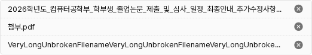
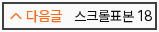
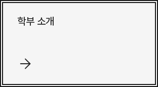
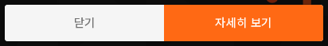
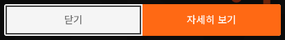

이미지 안내창의 초점과 닫기
관련 판단2개 · 제안은 앱 미적용이번에 적용한 DS
파일명은 B 한 줄 말줄임으로 적용했다. 행30px·삭제19px를 유지하고 삭제 기본500/호버700을 연결했다. 긴 한국어·영어·짧은 이름, 키보드 삭제를 확인했으며 승인 견본과 실제 결과가 일치했다. 파일 적용 전체 보기.

공통 초점을 페이지 이동·공지 제목·앞뒤 글·카테고리 카드·드롭다운 트리거·이미지 팝업 체크에도 연결했다. 밝은 면은 짙은 선, 어두운 면은 흰 선이며 기존 크기·기본색·호버색은 유지한다.
앞뒤 글 · 적용

카테고리 · 적용

1. 잘리는 초점은 버튼 안쪽에 · CF-Q1
현재 문제: 메인 이미지 안내창의 하단 버튼에는 초점 표시가 없다. 기존 공통 바깥선을 붙여도 이미지와 모서리를 자르는 창 경계에서 선이 잘린다.
추천: 이 두 버튼만 가장자리에서 안쪽2px 간격·2px 실선으로 표시한다. 두께·색·키보드 초점 조건은 공통 규칙을 유지하고 위치만 예외로 둔다. 버튼·이미지 크기를 바꾸지 않아도 전체 선이 보인다.
바깥선 대입 · 잘림

제안 · 안쪽선

자세히 보기 · 제안
English · 320px 제안
일반 버튼의 바깥 초점은 유지한다. 입력칸에 외곽선을 다시 넣지 않는다. 바깥선을 유지하려면 버튼 주변 공간이나 잘림 구조를 바꿔야 해서, 현재 배치를 보존하는 안쪽 표시를 추천한다.
2. 닫기는 기존 보조 버튼 색으로 · CF-Q2
현재 문제: 닫기 글자가 기본 #737373에서 호버 #a3a3a3으로 더 흐려진다. 제안: 글자는 #525252로 유지하고 바탕을 #f5f5f5 → #e5e5e5로 바꾼다. 기존 보조 버튼의 색을 재사용하며 호버 반응은 바탕 변화로 전달한다.
현재 · 기본
제안 · 기본
현재 · 호버
제안 · 호버
함께 정할 두 가지
- 이미지 안내창의 하단 두 버튼에만 안쪽 초점을 적용할까?
- 닫기 버튼은 제안한 보조 버튼 색으로 맞출까?
둘 다 적용을 추천해. 예: “1 적용, 2 적용”. 위 비교는 실제 로컬 화면의 DOM 스타일만 바꾼 견본이며 앱 코드는 아직 바꾸지 않았다.